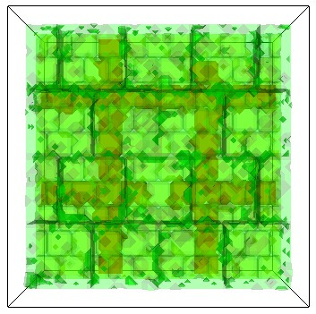
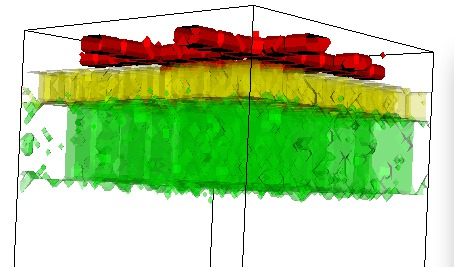
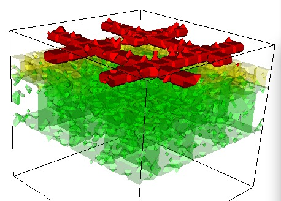
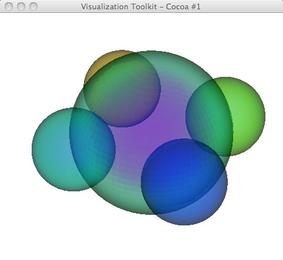

Notice problem with rendering multiple-transparent surfaces.

VTK example - but bogus colors on transparent spheres as you rotate!
Possibly helpful links:
http://www.cmake.org/Wiki/VTK/Depth_Peeling
http://www.vtk.org/Wiki/VTK/Examples/Visualization/CorrectlyRenderingTranslucentGeometry
And at least one example showing semi-transparent surfaces: